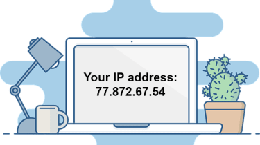
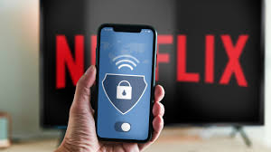

VPNs
VPN or virtual private networks have made browsing the internet less terrifying to browse. Whether at the comfort of home, or on a public internet connection, VPNs can help protect your information being leaked to unwanted parties.
A VPN acts as a mask to a person's IP (internet protocol) address. So why is it important to protect your IP? An IP acts as a sort of identifier which connects your devices to the internet. Your IP is important as it makes sure that requests being sent on the internet are sent and received correctly. This also means that anything being sent out on the internet can be traced back to the same device. A VPN can help mask information such as your IP online.
VPNs aren’t always necessary at home. Home networks typically have built in protections already such as a password. VPNs can still help protect your information being tracked online at home. Public networks on the other hand do not always have the same protections compared to your private home networks. If you log on to your social media, or when you make an online purchase, your login credentials or credit card numbers will be sent through the network. Hackers can take a peek at the traffic being sent on the same network which means they can access your private information. VPNs can help create a private network which can help mask what is being sent online. Although using your home network would still be the safest option.
While VPNs help protect your information, there are other uses apart from having better privacy. Depending on the VPN, options such as connecting to different servers and regions can also be available. Applications like Netflix connect to their regional server, which gives you access to watch your shows and movies. Some VPNs will let you switch your region which can also change the server that Netflix connects to. Giving you access to more shows.
